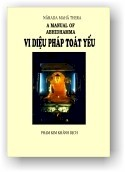
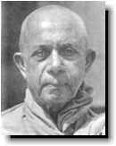

|
BuddhaSasana Home Page |
Vietnamese, with Unicode VU Times hay CN-Times font |
|  |
Abhidhammattha Saṅgaha Nārada Mahā Thera |
 |
|
Xin lưu ý: Cần có phông UnicodeViệt-Phạn VU Times hay CN-Times cài vào máy để đọc các chữ Pàli. |
|
-ooOoo- Lời mở đầu Như danh từ hàm xúc ý nghĩa, Abhidhamma, Vi Diệu Pháp, là Giáo Huấn Cao Siêu, vi diệu, thù thắng, của Ðức Phật. Sách nầy trình bày phần tinh hoa của Giáo Pháp mà Ngài ban truyền. Giáo Pháp nằm trong tạng Kinh (Sutta Pitaka) là giáo huấn thông thường, có tánh cách quy ước, chế định (vohāra desanā). Vi Diệu Pháp (Abhidhamma) là giáo huấn cùng tột (paramattha desanā) rốt ráo. Không thể đổi thay hay biến chuyển, không thể phân tách thêm được nữa. Trong Vi Diệu Pháp (Abhidhamma) cả danh và sắc, hai thành phần tâm linh và vật chất cấu tạo guồng máy phức tạp của con người, đều được phân tách rất tỉ mỉ. Những diễn tiến chánh yếu liên quan đến tiến trình sanh và tử đều được giải thích tường tận. Những điểm phức tạp và khó hiểu trong Giáo Pháp đều được rọi sáng. Con Ðường giải thoát được chỉ vạch với những ngôn từ rành rẽ. Tâm lý học hiện đại, còn hạn định, vẫn nằm trong phạm vi của Vi Diệu Pháp khi đề cập đến tâm, tư tưởng, tiến trình tư tưởng và trạng thái tâm. Nhưng Vi Diệu Pháp không chấp nhận có một linh hồn, xem như một thực thể đơn thuần thường còn, không biến đổi. Phật Giáo dạy một tâm lý học trong đó không có linh hồn trường cửu. Tâm thức được định nghĩa. Tư tưởng được phân tách và được sắp xếp thành loại trên bình diện luân lý. Tất cả những trạng thái tâm, hay tâm sở, đều được ghi rõ từng khoản. Thành phần cấu hợp của mỗi loại tâm đều được trình bày tường tận với đầy đủ chi tiết. Những tiến trình tâm phát sanh qua năm cửa giác quan và cửa tâm (ý căn) được mô tả một cách vô cùng hứng thú. Không có bản khái yếu tâm lý học nào giảng giải tiến trình tâm được rõ ràng như vậy. Những chặp tư tưởng Bhavaṅga (Hộ Kiếp) và Javana (Tốc Hành) mà trong tâm lý học hiện đại không có gì tương đương, chỉ được giải thích trong Vi Diệu Pháp. Người tìm học hỏi và nghiên cứu khoa tâm lý sẽ đặc biệt thích thú với đoạn nầy. Người thông suốt Vi Diệu Pháp sẽ nhận thức một cách hết sức rành mạch rằng luồng tâm trôi chảy như một dòng suối, quan điểm mà vài tâm lý gia hiện đại như William James cũng trình bày tương tợ. Ta phải thêm rằng người học Vi Diệu Pháp có thể thấu hiểu đầy đủ lý Vô Ngã (Anattā), giáo lý nòng cốt của Phật Giáo. Giáo lý nầy rất quan trọng về cả hai phương diện: triết học và đạo đức. Hiện tượng chết, tiến trình tái sanh vào những cảnh giới khác nhau mà không có gì di chuyển từ kiếp nầy sang kiếp khác, giáo lý Nghiệp Báo và Tái Sanh mà ta có thể kiểm chứng bằng những sự kiện hiển nhiên, tất cả đều được giải thích đầy đủ. Chứa đựng một kho tàng quý báu những chi tiết liên quan đến phần tâm linh (nāma, danh) Vi Diệu Pháp cũng đề cập đến yếu tố thứ nhì cấu thành con người -- phần vật chất (rūpa, sắc). Những thành phần căn bản của vật chất, những năng lực vật chất, đặc tánh của vật chất, nguồn gốc của vật chất, sự liên quan giữa cơ thể vật chất và tâm, sắc và danh, đều được mô tả. Trong tập "Abhidhammattha Saṅgaha", Vi Diệu Pháp Toát Yếu, cũng có trình bày vắn tắt Ðịnh Luật Tùy Thuộc Phát Sanh (cũng được gọi là pháp Thập Nhị Nhân Duyên, hay Thập Nhị Duyên Khởi), và tiếp theo sau là phần mô tả pháp Tương Quan Duyên Hệ (những tương quan giữa nhân và quả), không tìm thấy trong hệ thống triết học nào khác. Nhà vật lý học sẽ không đào bới sâu vào Vi Diệu Pháp để thâu thập một kiến thức thấu đáo và đầy đủ về vật lý học. Ta phải nói rõ rằng Vi Diệu Pháp không chủ trương trình bày một kiến thức có hệ thống về tâm và vật chất. Pháp nầy chỉ nghiên cứu hai yếu tố hổn hợp của cái được gọi là chúng sanh, nhằm thấu triệt thực tướng của vạn pháp. Dựa trên kiến thức ấy một triết học được phát huy. Và, đặt nền tảng trên triết học nầy, một hệ thống luân lý đạo đức được triển khai nhằm chứng ngộ mục tiêu cứu cánh, Niết Bàn. Cũng như Bà Rhys Davids nói rất đúng,
Trong Vi Diệu Pháp tất cả những vấn đề nào chỉ liên quan đến các học giả và những nhà khảo cứu mà không liên quan đến sự Giải Thoát, đều được thận trọng gác qua một bên. Tập "Abhidhammattha Saṅgaha", mà tác giả được xem là Ngài Anuruddha Thera, một vị tỳ khưu người Ấn ở Kanjevaram (Kañcipura), là bản toát yếu tóm lược Tạng Diệu Pháp (Abhidhamma Piṭaka, thường được gọi là Tạng Luận). Ðến nay sách nầy vẫn còn là bộ sách nhập môn Vi Diệu Pháp thích ứng nhất mà khi đã vững vàng thấu hiểu, ta có thể dễ dàng lãnh hội những nét đại cương của Tạng Luận. Ðể thật sự nắm vững ý nghĩa của Tạng Luận phải đọc đi đọc lại nhiều lần, đọc một cách chuyên chú và sáng suốt tất cả bảy bộ, cùng với những chú giải và những chú giải của các chú giải ấy. Vi Diệu Pháp không phải là một đề tài chỉ thỏa mãn tạm thời người đọc thoáng qua. Ðối với người minh mẫn sáng suốt thật sự muốn tìm chân lý, Vi Diệu Pháp là một hướng dẫn thiết yếu, vừa là một luận giải có tánh cách trí thức. Ở đây có thức ăn để bồi dưỡng tinh thần các tư tưởng gia chân chánh cũng như người hăng say nghiên cứu học hỏi nhằm tăng trưởng trí tuệ và sống cuộc sống lý tưởng của người Phật tử. Tuy nhiên, đối với người nông cạn chỉ nhìn thoáng qua trên bề mặt, Vi Diệu Pháp quả thật khô khan như cát, như bụi. Ta có thể nêu lên câu hỏi: "Vi Diệu Pháp có quả thật tuyệt đối thiết yếu để chứng ngộ Niết Bàn, mục tiêu cứu cánh của Phật Giáo không? Vi Diệu Pháp có thật sự tuyệt đối thiết yếu để thấu đạt thực tướng của vạn pháp không?" Vi Diệu Pháp chắc chắn là vô cùng hữu ích để thấu đạt giáo huấn của Ðức Phật một cách đầy đủ và chứng ngộ Niết Bàn, vì pháp nầy là chìa khóa để mở cửa vào thực tại. Pháp nầy đề cập đến những thực tại và lối sống thực tiễn cao thượng dựa trên sự chứng nghiệm của các bậc đã thấu triệt và chứng đắc. Thiếu kiến thức về Vi Diệu Pháp đôi khi ta thấy khó lãnh hội ý nghĩa thật sự của một vài giáo huấn thâm diệu của Ðức Thế Tôn. Abhidhamma, Vi Diệu Pháp, chắc chắn rất hữu ích để khai triển Tuệ Minh Sát (Vipassanā). Tuy nhiên chúng ta không thể khẳng định một cách quả quyết rằng Vi Diệu Pháp tuyệt đối thiết yếu để thành tựu Giải Thoát. Hiểu biết thấu đáo và chứng ngộ là vấn đề thuần túy cá nhân (sandiṭṭhika, mỗi cá nhân phải thấu triệt chân lý và thành tựu giải thoát cho chính mình). Tứ Diệu Ðế, nền tảng của giáo huấn mà Ðức Phật ban truyền, tùy thuộc nơi tấm thân nhỏ bé nầy. Giáo Pháp không riêng biệt với ta, không ở ngoài ta. Hãy nhìn trở vào trong. Hãy tự tìm lấy ta. Chân lý sẽ tự nó bày trần, trải ra trước mắt ta. Phải chăng thiếu phụ Paṭācārā, vô cùng sầu lụy vì mất tất cả những người thân yêu nhất trong đời, đã chứng ngộ Niết Bàn trong khi rửa chân dưới suối, nhờ quán niệm về những giọt nước từ chân rơi xuống gieo điểm trên mặt nước rồi tan biến theo dòng? Phải chăng Cūlapanthaka, người không thể học thuộc một câu kinh trong thời gian bốn tháng trường đã thành tựu Ðạo Quả A La Hán nhờ thấu hiểu bản chất vô thường của một cái khăn tay sạch mà mỗi ngày ông đưa lên ngay mặt trời để nhìn? Phải chăng Upatissa, về sau trở thành Ðức Sāriputta, Xá Lợi Phất, đã chứng đắc Niết Bàn khi chỉ nghe được phân nửa câu kệ liên quan đến nhân và quả? Ðối với vài người, chỉ một chiếc lá vàng rơi cũng đủ để chứng đắc Ðộc Giác Phật. Ðối với những vị thường xuyên suy gẫm sâu xa, một chỉ dẫn nhẹ nhàng thoáng qua cũng đủ để khám phá những chân lý vĩ đại. Theo một vài học giả, Vi Diệu Pháp (Abhidhamma) không phải do Ðức Phật truyền dạy mà về sau, do các nhà sư uyên bác soạn thảo và trau chuốt. Tuy nhiên, theo truyền thống, chính Ðức Phật giảng dạy phần nòng cốt của Vi Diệu Pháp. Các nhà chú giải ghi nhận rằng để tỏ lòng tri ân từ mẫu -- lúc bấy giờ đã qua đời và tái sanh vào một cảnh trời -- Ðức Phật thuyết giảng liên tiếp suốt ba tháng cho vị Trời mà trước kia là mẹ Ngài cùng với chư Thiên khác. Ðức Thế Tôn dạy Ngài Sāriputta những chủ đề chánh yếu (mātikā) của giáo lý cao siêu cấp tiến như các thiện pháp (kusalā dhamma), bất thiện pháp (akusalā dhammā) và bất định pháp (abyākata) v.v... rồi Ngài Sāriputta giảng rộng ra, gom lại thành sáu bộ sách của Tạng Luận (ngoại trừ bộ Kathāvatthu, Thuyết Sự, những điểm tranh luận). Rất khó mà tìm được một danh từ thích nghi để phiên dịch một cách chính xác Phạn ngữ "Abhidhamma". Ở đây xin tạm dịch là "Vi Diệu Pháp". Trong Vi Diệu Pháp cũng có nhiều danh từ kỹ thuật không thể được phiên dịch sang một từ ngữ khác mà khỏi làm sai lệch ý nghĩa. Vài danh từ như tâm, ý chí, tác ý, trí thức, tri giác v.v... được dùng trong triết học Tây Phương với những ý nghĩa đặc biệt. Nơi đây xin quý vị đọc giả cố gắng hiểu các danh từ kỹ thuật ấy theo nghĩa của Vi Diệu Pháp (Abhidhamma). Ðể tránh hiểu lầm từ ngữ theo lối hiểu biết quen thuộc từ xưa, các danh từ Pāli được giải thích và giữ lại dùng ở đây, mặc dầu người không quen thuộc với Pāli đôi khi thấy phiền phức. Trong nhiều trường hợp các danh từ Pāli được chiết tự và giải thích theo ngữ nguyên để được hiểu rõ ràng và chính xác. Ðôi khi danh từ Pāli được chọn dùng luôn mà không phiên dịch để người đọc quen thuộc với những chữ ấy. Cũng có khi người đọc gặp những danh từ không được thông dụng như hoặc lậu, tâm hành, tâm quả v.v... nhưng rất quan trọng trên phương diện Vi Diệu Pháp, ý nghĩa của những danh từ nầy phải được thông suốt rõ ràng và chính xác. Trong khi soạn thảo bản dịch nầy, hai quyển "Buddhist Psychology" của Bà Rhys Davids và "Compendium of Philosophy" của Ông Shwe Zan Aung quả thật vô cùng hữu ích. Mỗi khi cần, những đoạn trong hai quyển sách nầy được trích dẫn và đăng nguyên văn cùng với lời ghi chú về xuất xứ của nó. Tôi chân thành tri ân hội Buddhist Publication Society đã tình nguyện ấn hành bản duyệt lại lần thứ nhì nầy. Nārada -ooOoo- Ðầu trang | Mục lục | 01 | 02 | 03 | 04 | 05 | 06 | 07 | 08 | 09 (xem: nguyên tác Anh ngữ) |
Chân thành cám ơn Bác Phạm Kim Khánh đã gửi tặng bản vi tính (Bình Anson, 06-2002)
[Trở
về trang Thư Mục]
updated: 24-08-2003